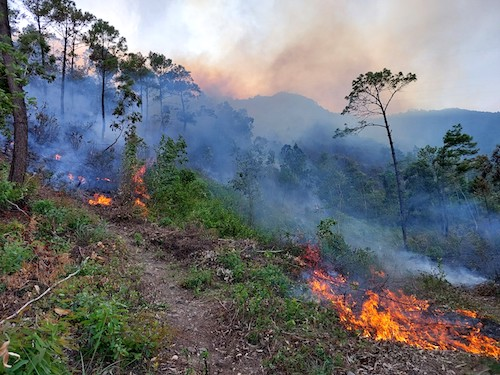
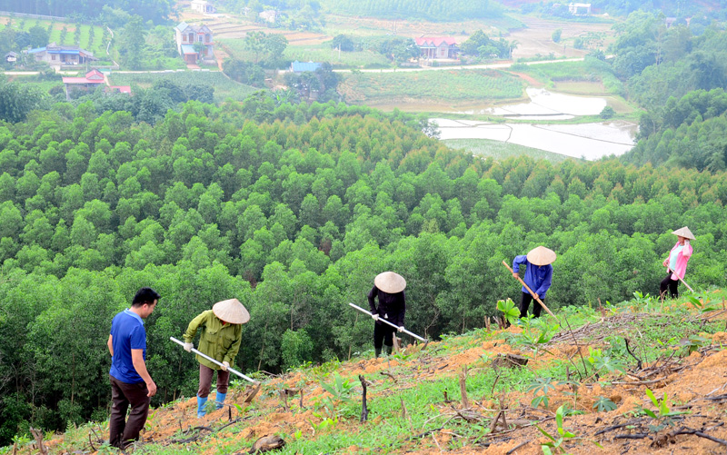

1. Giai Đoạn Khó Khăn
(1943 - 1983)
(1943 - 1983)

Giai đoạn này chứng kiến sự sụt giảm nghiêm trọng diện tích rừng:
- Năm 1943: 14,3 triệu ha (Che phủ 43,0%).
- Năm 1983: Giảm còn 7,2 triệu ha (Che phủ 22,0%).
2. Phục Hồi và Phát Triển
(Đến năm 2021)
(Đến năm 2021)

Sự nỗ lực trồng và bảo vệ rừng đã mang lại kết quả lớn:
- Tổng diện tích 2021: 14,7 triệu ha.
- Trong đó: 10,2 triệu ha rừng tự nhiên và 4,5 triệu ha rừng trồng.
3. Thế Mạnh Quốc Tế
(Tỉ lệ che phủ vượt trội)
(Tỉ lệ che phủ vượt trội)

Việt Nam có tỉ lệ che phủ rừng vượt trội so với mức trung bình của thế giới.